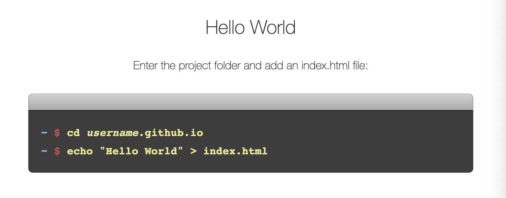
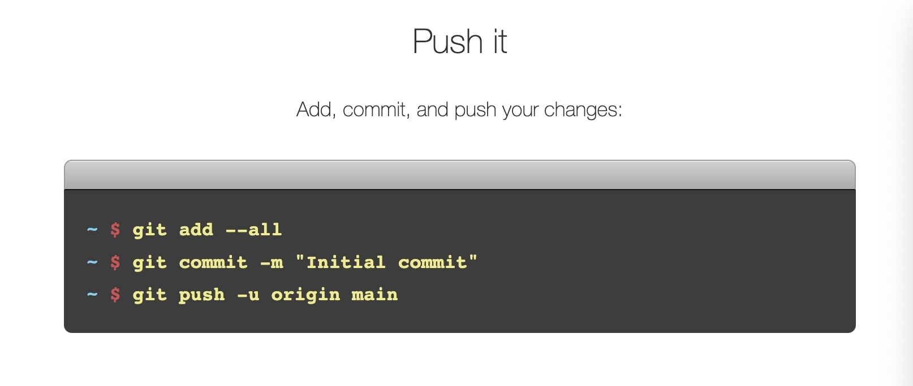
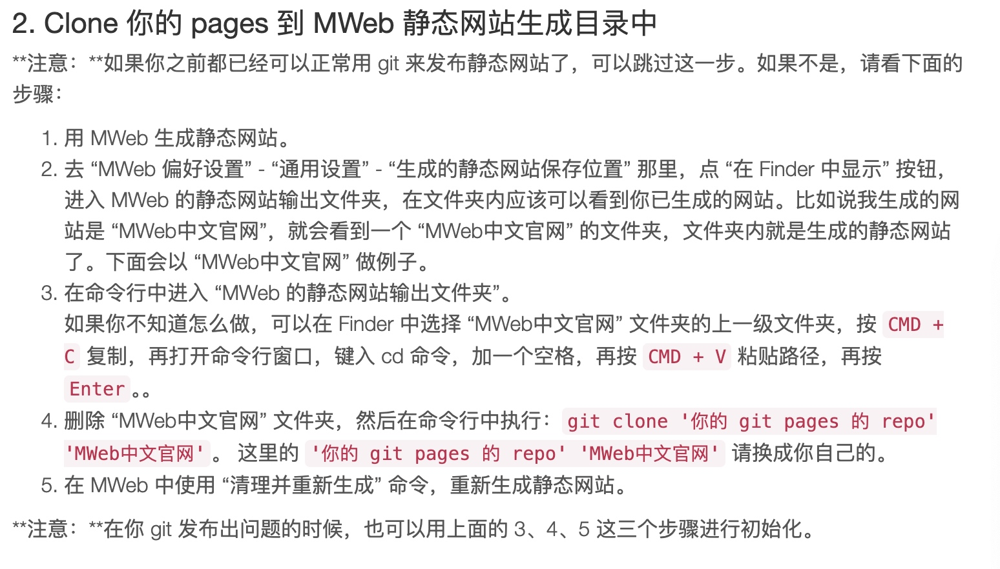

虽然 MWeb 官方有教程，但对于新手来说还是会遇到很多问题，比如如何在 GitHub 上部署个人页面，发布脚本命令也会遇到各种问题，只能一步一步的找 Monica ai 问，一步一步的解决。
最终流程倒是挺简单，但是过程会踩很多坑，还看不懂踩的什么坑。下面我大概写一下我的部署流程，尽量简单无脑。
第一步 配置 GitHub Pages
1.创建一个新仓库（repository）
- 注册或登陆自己的 GitHub
- 点击页面右上角自己的用户头像
- 点击 Your repositories
- 点击新页面右上角 New
- 参考以下页面创建一个新的仓库。

重点注意：仓库名使用「自己的用户名.github.io」，比如以上案例，所有者的名称是 sophshep，后面要再写多一遍sophshep 再加上「.github.io」。这个地方是我踩的深坑，我以为可以自定义名称，没想到不能乱写要和所有者的名称一样才行。
2.配置个人密匙
- 点击页面右上角自己的用户头像
- 点击 Settings
- 点击左侧栏 Developer settings
- 点击左侧栏 personal access tokens > Tokens（classic）
- 点击右上角 Generate new token > Generate new token(classic)
- 新页面这里 Expiration 这里选 90 天或更少，其他什么都不选拉到最下面创建
- 创建之后显示的密匙最好自己复制粘贴到其他地方备用，以后是看不到这个密匙的
3.按照https://pages.github.com/页面走一遍
我也不知道有没有必要走这一遍，但是我是按照这个页面操作了一遍，建议各位跟我一样。
注意：我是选的 A terminal，命令流程我就截图展示，大家也可以直接看网页。



以上命令执行完之后，如果不出意外，就可以试着访问一下自己的主页「https://username.github.io.」看看 Hello World。
以上，GitHub Pages 就配置好了，接下来是 MWeb。
第二步 配置 MWeb 以及 发布脚本
参考：https://zh.mweb.im/zh-mweb-static-blog
参考：https://zh.mweb.im/how_to_use_shell_script
1.体验静态网站最简单的方式
打开 MWeb，在文档库里新建一个分类（文件夹），放几篇自己写的文章进去。
- 右键这个分类，点击编辑
- 点击弹出页面右下角「设为静态网站」，之后会弹出以下界面

模板那里是网站主题，可以去官网下载一些主题，或者自己研究一下怎么自己写主题。其他位置都可以按自己需要填写，不过网站网址这里需要注意填写上面配置的 GitHub Pages 的网址，比如我的是：https://yicaoren.github.io/ - 只是体验静态网站，那点击上面生成网站 > 预览网站，就能看到自己的网页了。
- 其他设置看官网说明，就不细说了。
2.配置「发布脚本」
这里我直接截图官网说明，并说明我操作失误的地方。因为前面已经配制好的 GitHub Pages，所以直接从第 2 步开始。
2.Clone 你的 pages 到 MWeb 静态网站生成目录中

注意：
- 第 4 点这里，说要删除原本生成的那个静态网址文件夹，是真的要删除，大家不用担心会影响原本 MWeb 中的内容，可以放心删除。
- '你的 git pages 的 repo'这个填这个网址「https://github.com/yicaoren/yicaoren.github.io」，把 yicaoren 换成你们自己的用户名。
- 注意'你的 git pages 的 repo' 'MWeb中文官网'中间是有空格的，并且实际写命令的时候不用有单引号。
3.配置发布脚本
在下图，在 “MWeb 偏好设置” - “扩展” - “发布脚本” 中配置。

建议复制以下我的内容，因为我用着没问题：
#!/bin/sh
# Please set the name and email.
# Because MWeb can't get your github global setting.
git config user.name "yicaoren"
git config user.email "yicaoren@gmail.com"
git add --ignore-removal .
git commit -m "{{year}}-{{month}}-{{day}} {{time}}"
git push -u origin main
以上配制好之后，就可以关掉 MWeb 的偏好设置，返回 MWeb 应用界面，找到之前设置过静态网址的分类，右键点击最下面的「复制发布脚本命令并打开终端」，会自动打开终端，直接粘贴回车即可。
刚操作完之后不要着急打开自己的网页看效果，因为没那么快。过几分钟再打开，就能看到自己配置好的主页了。有新增内容在 MWeb 的静态网址分类中之后，重新发布脚本命令即可。
我的使用就到这，之后如果遇到其他命令行的错误，麻烦找 chatgpt。